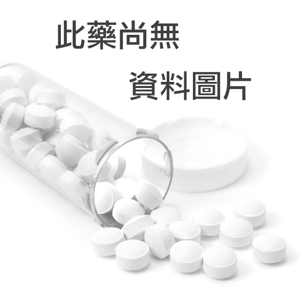

| 藥物圖片 |  |
|---|---|
| 中文藥名 | 都保定量粉狀吸入劑 １６０／４．５ＭＣＧ／ＤＯＳＥ〝吸必擴〞 |
| 英文藥名 | SYMBICORT TURBUHALER 320/9 μG/DOSE |
| 顏色 | 紅 |
| 劑型 | 粉狀吸入劑 |
| 包裝 | 瓶裝 |
| 適應症 | |
| 使用劑量 | 成人(18歲及以上)：每天2次，每次吸入1-2劑。有些病患可能需要每天2次，每次多達4劑。青少年(12-17歲)：每天2次，每次吸入1-2劑。兒童(6歲及以上)：每天2次，每次吸入1劑。最大每日維持劑量為2劑 |
| 適應症 | 氣喘。適合使用類固醇及長效BETA2作用劑(BETA2-AGONIST)合併治療的支氣管氣喘(BRONCHIAL ASTHMA)。慢性阻塞性肺部疾病(COPD):患有較嚴重之慢性阻塞肺疾(FEV1少於預測值之50%)及有反覆惡化病史，已定期使用長效型支氣管擴張劑，而仍有嚴重症狀病患之治療。 |
| 經銷商 | 臺灣阿斯特捷利康股份有限公司 |
| 經銷商地址 | 台北市大安區敦化南路二段207號21樓 |
| 生產廠商 | ASTRAZENECA AB |
| 生產國家 | SWEDEN |
| 生產廠地址 | S-151 85 SODERTALJE SWEDEN |
| 藥品類別 | 須由醫師處方使用 |
| 許可證字號 | 衛署藥輸字第023265號 |
| 許可證種類 | 製 劑 |
| 註銷狀態 | 已註銷 |
| 發證日期 | 2013-04-26 |
| 管制藥品級別 |